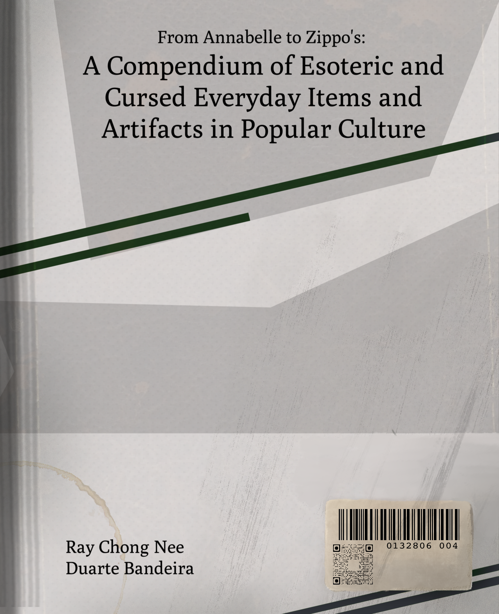
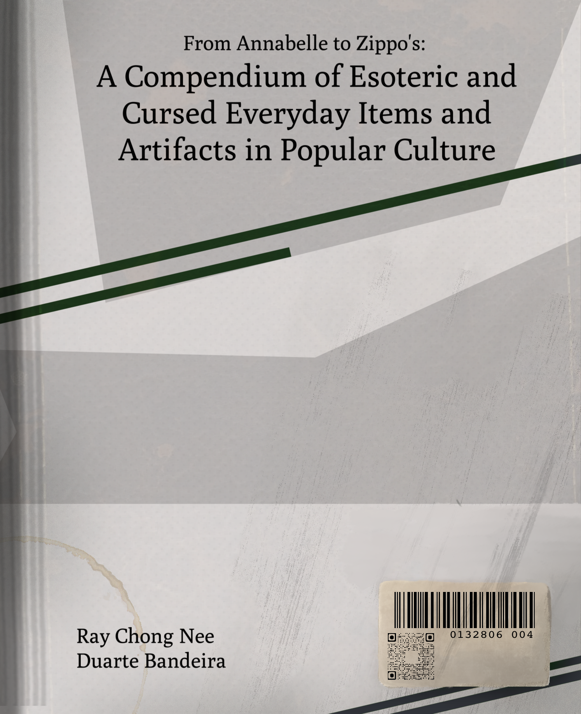

|  |  |
|
|
At the Magnus Institute, London, we aim to gather the world's most precise, varied and well-organised collection of research, statements and objects related to the paranormal and the supernatural. From ghost encounters to cursed objects, from alternate realities to suspicious disappearances, we study, observe and record the history and present of the formerly unknown and unfathomable, and swear to bring light to the most mysterious side of our collective human experience.
Within the past decades, our staff has grown significantly, and in 1995 it boasts a well-composed, dedicated team of researchers and scholars determined to gather, then handle and preserve a unique and exemplary assortment of donations made both by public institutions and private individuals in the form of letters, books, and other historical and contemporary objects of interest. Our specialised archival and research teams deal with our written and recorded statements that are gathered by our Institute and cannot be found or replicated anywhere else in the world.
In our library can be found an equally unmatched collection of esoteric and occult literature, written by the most reliable narrators only; those with personal experience, those with years or decades of research under their belts, and those who have personally involved themselves in the supernatural.
It is the perfect place to find essays, articles, true stories, collections of oral mythology and legends, alongside autobiographical and historical texts pertaining to any relevant subject matter.
These primary sections of the functions of our Institute provide context, foundation and content for our own research, with which you can familiarise yourself below.
Our current focus in research is to catalogue and organise subjects in a few set categories of special interest: we study the human condition itself and its everyday collision with fears of different kinds, levels and varieties. What are these fears? How do they manifest in us? How do they manifest externally? We dive deeper in our dissertations, tackling the subject matters of solitude and isolation, the power of the written word, history of the fears of what cannot be perceived by the human eye or understood with the limitations of our minds, and the facets that fear itself has adopted in our modern age with the help of our modern equipment and lifestyle. Fear has followed human society from its very beginning, and it has shaped our civilisations and our cultures unlike any other instinct or emotion. It is a driving force of evolution, one which is alarmingly under-researched in its more mysterious and challenging forms, and our researchers are determined to change this.
You will find below a few examples from our collections.
For any additional information, you can contact us via phone (0171 000 0000), fax (0171 000 0002), e-mail (mail@themagnusinstitute.org), or by visiting our physical location at 8 Erasmus St. in London, UK.
|  | |
|
|